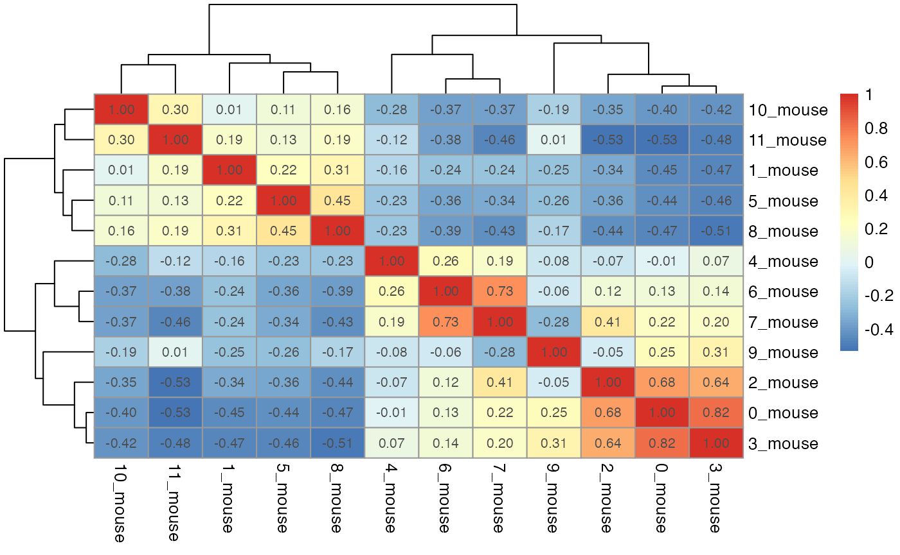
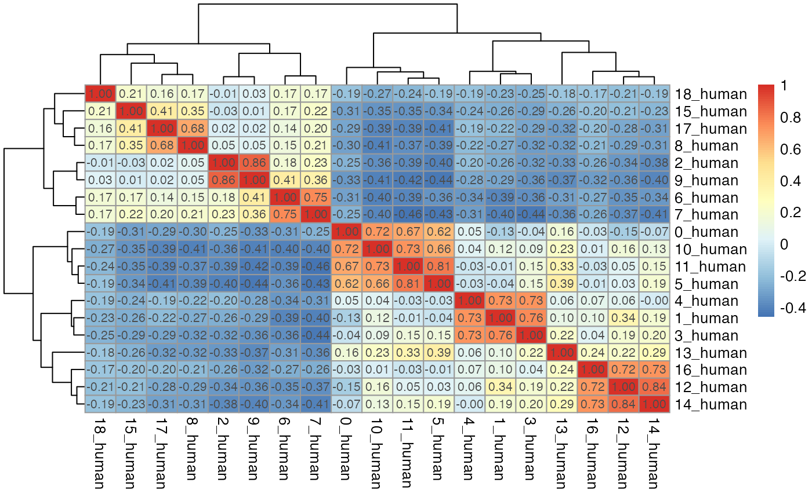
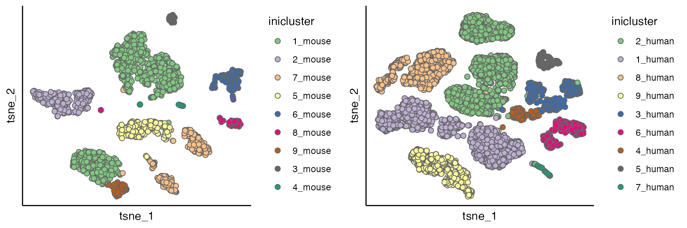
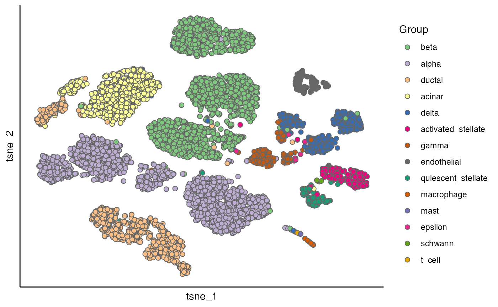
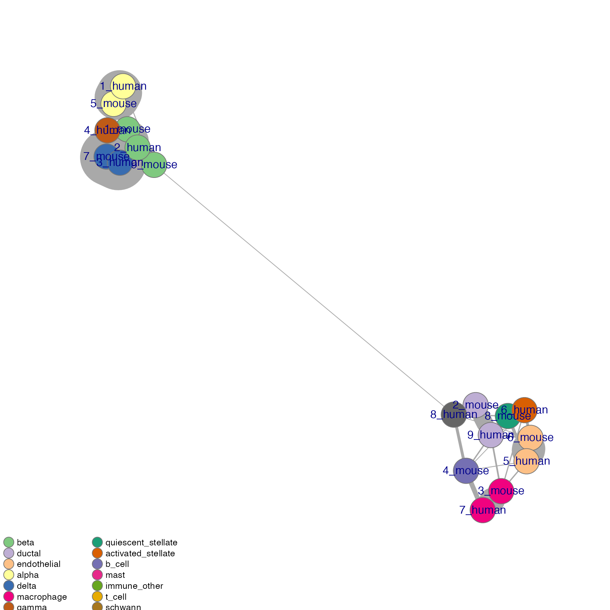
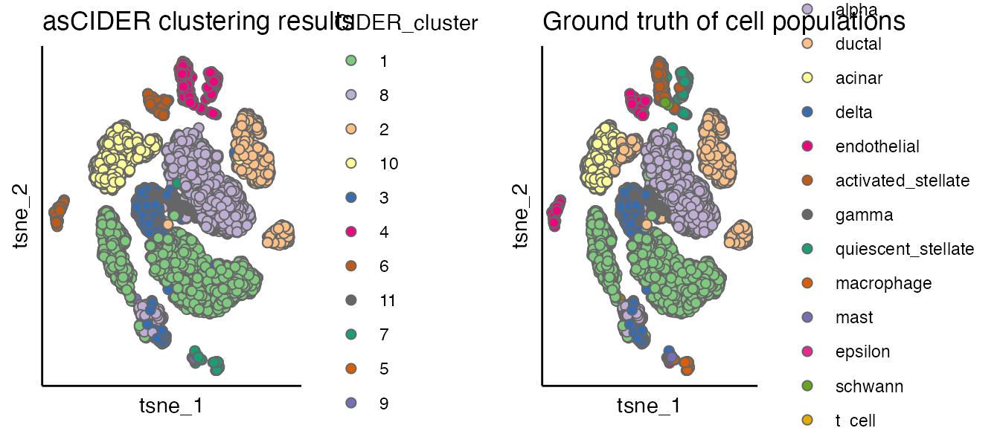

Introduction
This vignette performs dnCIDER on a cross-species pancreas dataset. It is aimed to show the underneath structure of dnCIDER compared to the other high level vignette.
Load example data
Pancreatic cell data\(^1\) contain cells from human (8241 cells) and mouse (1886 cells).
data("pancreas_counts") # count matrix
data("pancreas_meta") # meta data/cell information
seu <- CreateSeuratObject(counts = pancreas_counts, meta.data = pancreas_meta)
table(seu$Batch)
#>
#> human mouse
#> 8241 1886Perform initial clustering
seu_list <- Seurat::SplitObject(seu, split.by = "Batch")
seu_list <- mclapply(seu_list, function(x) {
x <- NormalizeData(x, normalization.method = "LogNormalize", scale.factor = 10000, verbose = FALSE)
x <- FindVariableFeatures(x, selection.method = "vst", nfeatures = 2000, verbose = FALSE)
x <- ScaleData(x, verbose = FALSE, vars.to.regress = "Sample")
x <- RunPCA(x, features = VariableFeatures(object = x), verbose = FALSE)
x <- FindNeighbors(x, dims = 1:15, verbose = FALSE)
x <- FindClusters(x, resolution = 0.6, verbose = FALSE)
return(x)
})| 0 | 1 | 2 | 3 | 4 | 5 | 6 | 7 | 8 | 9 | 10 | 11 | 12 | 13 | 14 | 15 | 16 | 17 | 18 | |
|---|---|---|---|---|---|---|---|---|---|---|---|---|---|---|---|---|---|---|---|
| acinar | 0 | 0 | 823 | 0 | 0 | 0 | 1 | 1 | 2 | 102 | 0 | 0 | 0 | 0 | 0 | 0 | 0 | 3 | 0 |
| activated_stellate | 0 | 0 | 0 | 1 | 0 | 0 | 0 | 0 | 269 | 0 | 0 | 0 | 0 | 0 | 0 | 0 | 1 | 4 | 0 |
| alpha | 1067 | 3 | 0 | 0 | 0 | 665 | 0 | 0 | 0 | 0 | 251 | 243 | 1 | 6 | 0 | 0 | 1 | 0 | 4 |
| b_cell | 0 | 0 | 0 | 0 | 0 | 0 | 0 | 0 | 0 | 0 | 0 | 0 | 0 | 0 | 0 | 0 | 0 | 0 | 0 |
| beta | 1 | 886 | 2 | 812 | 740 | 1 | 0 | 0 | 0 | 0 | 2 | 0 | 3 | 2 | 1 | 0 | 4 | 0 | 1 |
| delta | 0 | 3 | 2 | 1 | 3 | 0 | 0 | 0 | 0 | 0 | 1 | 0 | 215 | 1 | 216 | 0 | 148 | 0 | 2 |
| ductal | 1 | 1 | 6 | 0 | 0 | 0 | 469 | 386 | 0 | 169 | 0 | 0 | 1 | 0 | 0 | 0 | 0 | 0 | 0 |
| endothelial | 0 | 0 | 0 | 0 | 0 | 0 | 0 | 0 | 1 | 0 | 0 | 0 | 0 | 0 | 0 | 212 | 0 | 1 | 0 |
| epsilon | 0 | 0 | 0 | 0 | 0 | 0 | 0 | 0 | 0 | 0 | 0 | 0 | 8 | 8 | 0 | 0 | 1 | 0 | 0 |
| gamma | 1 | 1 | 0 | 0 | 0 | 0 | 0 | 0 | 0 | 0 | 1 | 0 | 3 | 210 | 0 | 0 | 25 | 0 | 0 |
| immune_other | 0 | 0 | 0 | 0 | 0 | 0 | 0 | 0 | 0 | 0 | 0 | 0 | 0 | 0 | 0 | 0 | 0 | 0 | 0 |
| macrophage | 0 | 0 | 0 | 0 | 0 | 0 | 0 | 0 | 0 | 0 | 0 | 0 | 0 | 0 | 0 | 0 | 0 | 0 | 39 |
| mast | 0 | 0 | 0 | 0 | 0 | 0 | 0 | 0 | 0 | 0 | 0 | 0 | 0 | 0 | 0 | 0 | 0 | 0 | 25 |
| quiescent_stellate | 1 | 0 | 0 | 1 | 0 | 0 | 1 | 0 | 4 | 0 | 0 | 0 | 0 | 0 | 0 | 0 | 0 | 153 | 0 |
| schwann | 0 | 0 | 0 | 0 | 0 | 0 | 0 | 0 | 10 | 0 | 0 | 0 | 0 | 0 | 0 | 0 | 0 | 0 | 0 |
| t_cell | 0 | 0 | 0 | 0 | 0 | 0 | 0 | 0 | 0 | 0 | 0 | 0 | 0 | 0 | 0 | 0 | 0 | 0 | 7 |
seu_list <- mclapply(seu_list, RunTSNE, dims = 1:15)
p1 <- scatterPlot(seu_list[[1]], "tsne", colour.by = "seurat_clusters")
p2 <- scatterPlot(seu_list[[2]], "tsne", colour.by = "seurat_clusters")
cowplot::plot_grid(p1,p2)
dist_coef <- getDistMat(seu_list, downsampling.size = 50)
#>
|
| | 0%
|
|=================================== | 50%
|
|======================================================================| 100%
par(mfrow = c(length(seu_list),1))
for(i in which(sapply(dist_coef, function(x) return(!is.null(x))))){
tmp <- dist_coef[[i]] + t(dist_coef[[i]])
diag(tmp) <- 1
pheatmap::pheatmap(tmp, display_numbers = TRUE)
}
for(seu_itor in 1:2){
tmp <- dist_coef[[seu_itor]] + t(dist_coef[[seu_itor]])
diag(tmp) <- 1
tmp <- 1 - tmp
hc <- hclust(as.dist(tmp), method = "average")
hres <- cutree(hc, h = 0.4)
df_hres <- data.frame(hres)
df_hres$hres <- paste0(df_hres$hres, "_", unique(seu_list[[seu_itor]]$Batch))
seu_list[[seu_itor]]$inicluster_tmp <- paste0(seu_list[[seu_itor]]$seurat_clusters, "_", seu_list[[seu_itor]]$Batch)
seu_list[[seu_itor]]$inicluster <- df_hres$hres[match(seu_list[[seu_itor]]$inicluster_tmp,rownames(df_hres))]
}
# plot(as.dendrogram(hc), horiz = T)
p1 <- scatterPlot(seu_list[[1]], "tsne", "inicluster")
p2 <- scatterPlot(seu_list[[2]], "tsne", "inicluster")
plot_grid(p1,p2)
scatterPlot(seu_list[[2]], "tsne", "Group")
Calculate of IDER similarity matrix
res <- unlist(lapply(seu_list, function(x) return(x$inicluster)))
res_names <- unlist(lapply(seu_list, function(x) return(colnames(x))))
seu$initial_cluster <- res[match(colnames(seu), res_names)]
ider <- getIDEr(seu,
group.by.var = "initial_cluster",
batch.by.var = "Batch",
downsampling.size = 35,
use.parallel = FALSE, verbose = FALSE)
net <- plotNetwork(seu, ider, colour.by = "Group" , vertex.size = 0.6, weight.factor = 5)
hc <- hclust(as.dist(1-(ider[[1]] + t(ider[[1]])))/2)
plot(as.dendrogram(hc), horiz = T)Perform final Clustering
seu <- finalClustering(seu, ider, cutree.h = 0.35) # final clustering
seu <- NormalizeData(seu, verbose = FALSE)
seu <- FindVariableFeatures(seu, selection.method = "vst",
nfeatures = 2000, verbose = FALSE)
seu <- ScaleData(seu, verbose = FALSE)
seu <- RunPCA(seu, npcs = 20, verbose = FALSE)
seu <- RunTSNE(seu, reduction = "pca", dims = 1:12)
plot_list <- list()
plot_list[[1]] <- scatterPlot(seu, "tsne", colour.by = "CIDER_cluster", title = "asCIDER clustering results")
plot_list[[2]] <- scatterPlot(seu, "tsne", colour.by = "Group", title = "Ground truth of cell populations")
plot_grid(plotlist = plot_list, ncol = 2)